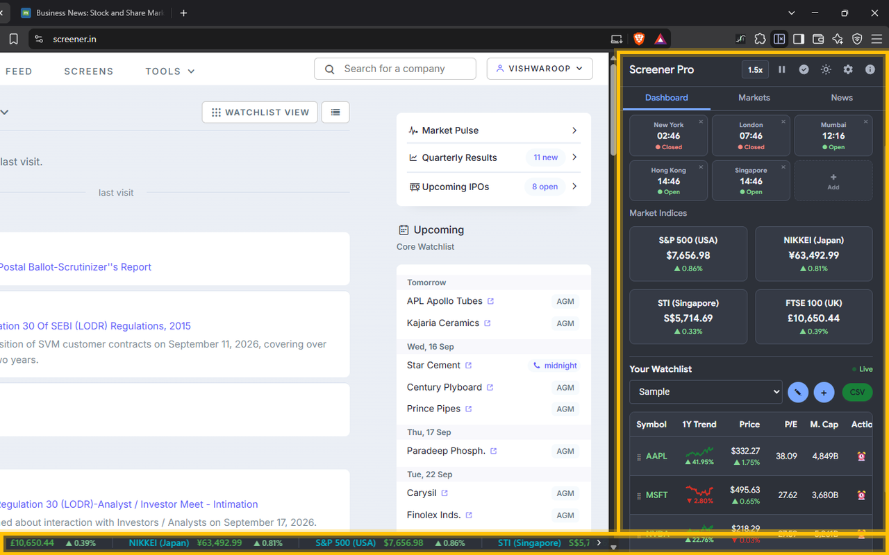

01 Watchlist
Add to Watchlist
Right-click any stock name or ticker symbol on any webpage to instantly add it to your Screener watchlist. No copy-pasting required.

Live NYSE watchlist, S&P tape, charts and global markets inside every tab.

A faster way to monitor NYSE and Nasdaq holdings. Indices always in view, fullscreen workspace one click away.
Right-click any stock name or ticker symbol on any webpage to instantly add it to your Screener watchlist. No copy-pasting required.
Opens on the USA. S&P 500, Nasdaq, Dow. Switch economies without losing your watchlist. Track the FTSE 100 in the UK, Nifty 50 in India, Nikkei 225 in Japan, Hang Seng in Hong Kong, DAX in Germany, CAC 40 in France, ASX 200 in Australia, TSX in Canada, and the Straits Times Index in Singapore. Each economy displays its native currency with live macro indicators tied to World Bank data.
Portfolios stay intact in the side panel while you browse global macro data. Switch between any two economies instantly — your watchlist, alerts, and chart preferences carry over without reset. Macro tiles like inflation, GDP, and unemployment update per economy so you always see the context behind the numbers.
Index heatmap plus strictly separated gainers and losers. Click anything for full analysis. The heatmap renders every stock in the index as a colour-coded tile sized by market cap. Green shades mark gains, red shades mark losses, and neutral grey sits in between. A single click opens the stock detail popup with sparkline chart, period returns, P/E ratio, market cap, and AI verdict — all without leaving the page.
Heatmap tiles update in real time as prices stream in. Hover any tile to see the exact percentage move and current price. The layout reflows automatically when the index composition changes, keeping the view tight and readable even on smaller screens.
Inflation, unemployment, GDP growth and GDP per capita. Editable tiles, every tile linked to its World Bank page.

Exact price-and-date on hover, period returns recalculated per range.

Green / red movement highlights, market cap, P/E, AI verdicts and background price alerts with desktop notifications. Every price tick is evaluated against your alert thresholds in the background. When a condition is met — whether a percentage swing, a market-cap milestone, or a P/E level — a desktop notification fires instantly, even when the side panel is closed.
Alerts run on background alarms with desktop notifications as prices stream in. Movement highlights paint green or red on the ticker row the moment a threshold is crossed. AI verdicts synthesize price action, volume and fundamentals into a concise buy / hold / watch signal. You stay informed without refreshing, switching tabs, or losing focus on what you are reading.
US stocks, ETFs and indices. S&P 500, Nasdaq, Dow display in $. Other economies keep native currencies. No silent conversion.
Short reads on markets and indicators in plain language. View all posts
Loading posts...
Designed and built by Vishwaroop Galgali. vishwaroopgalgali.com